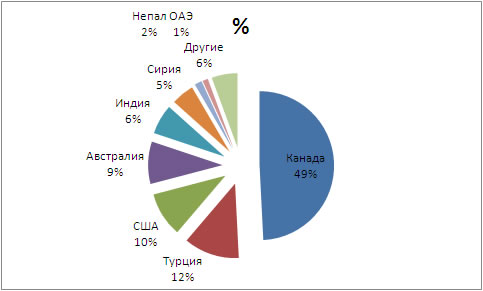
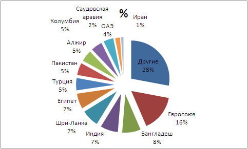

| По объему производства чечевица занимает четвертое место среди холодостойких зернобобовых, на английском эта группа культур называется pulses. Производство ее в мире за последние 10 лет колебалось от 3,3 млн. т. до 4,65 млн. т. в 2011 г. Наибольше ее выращивают в таких странах как: Канада, Индия, Турция, Бангладеш, Австралия, Непал, США, Китай, Сирия, Иран (табл. 2). Среди этих стран Канада, Австралия выращивают чечевицу практически только для экспорта. Примерно 75% валового производства составляет красная чечевица, 20% зеленая, 5% коричневая и прочие типы. Основными производителями зеленой чечевицы являются США и Канада, тогда как остальная часть мира выращивает главным образом красную чечевицу. В Украине традиционно более распространена зеленая чечевица, и все сорта этой культуры, внесенные в Государственный реестр, относятся к этому типу. 75% красной чечевицы и 45% зеленой, а в среднем 70% выращенной чечевицы, потребляется в регионах выращивания. |
1. Производство чечевицы в странах мира, т., в 2004-2010 гг.
Страны |
2004 г. |
2005 г. |
2006 г. |
2007 г. |
2008 г. |
2009 г. |
2010 г. |
Среднее |
Канада |
915800 |
1164300 |
692800 |
733900 |
1043200 |
1510200 |
1947100 |
1143900 |
Индия |
1037800 |
994200 |
946200 |
910000 |
810000 |
950000 |
900000 |
935457 |
Турция |
540000 |
570000 |
622284 |
515181 |
131188 |
302181 |
447400 |
446891 |
США |
186692 |
238000 |
147145 |
165561 |
108545 |
265760 |
392670 |
214910 |
Непал |
158651 |
160716 |
157963 |
164694 |
161147 |
147725 |
151757 |
157522 |
Китай |
144000 |
135000 |
126000 |
134000 |
150000 |
120000 |
125000 |
133429 |
Сирия |
125300 |
153665 |
180720 |
109033 |
34100 |
102461 |
77300 |
111797 |
Австралия |
52300 |
210000 |
36000 |
131000 |
64234 |
143000 |
140000 |
110933 |
Иран |
110760 |
113225 |
100784 |
104717 |
56099 |
83985 |
79174 |
92678 |
Марокко |
32550 |
14960 |
34230 |
8500 |
9380 |
23210 |
28420 |
21607 |
Другие |
303035 |
288805 |
294078 |
322910 |
258822 |
283286 |
296618 |
292508 |
Всего |
3606888 |
4042871 |
3338204 |
3299496 |
2826715 |
3931808 |
4585439 |
3661632 |
Источник: FAO
Мировая продажа за последние десять лет колебалась от 1,01 млн. т. в 2002 г. до 1,36 млн. т. в 2011 г. Список стран экспортеров, причем со значительным отрывом, возглавляют четыре страны: Канада, Турция, США, Австралия - почти 81% мирового экспорта (рис. 1). Канада экспортирует 75% выращенной чечевицы, тогда как другие страны экспортируют незначительную долю от своего валового производства. В таблице 3 приведена информация по основным странам экспортерам чечевицы по годам. Около 60% экспорта составляет красная чечевица, 35% зеленая, 5% коричневая и прочие типы. |
 |
Рис.1. Удельный вес основных стран-экспортеров чечевицы на мировом рынке, %
(среднее за 2002-2010 гг., FAO). |
1. Объем экспорта семян чечевицы основными странами-производителями, т.,
в 2004-2010 гг.
Страны |
2002 г. |
2003 г. |
2004 г. |
2005 г. |
2006 г. |
2007 г. |
2008 г. |
2009 г. |
Среднее |
Канада |
351096 |
370876 |
373549 |
576878 |
683022 |
921394 |
852876 |
1240800 |
671311 |
Турция |
119151 |
216918 |
171185 |
118421 |
301329 |
186271 |
70340 |
130069 |
164211 |
США |
103138 |
97198 |
87551 |
162520 |
130732 |
122774 |
168646 |
184077 |
132080 |
Австралия |
242049 |
84595 |
150314 |
108341 |
173036 |
101611 |
76026 |
67116 |
125386 |
Индия |
86395 |
83053 |
136922 |
281276 |
121010 |
51 |
110 |
602 |
88677 |
Сирия |
10647 |
69728 |
71038 |
60600 |
79427 |
243165 |
3337 |
3337 |
67660 |
Непал |
27785 |
30449 |
15252 |
14591 |
7778 |
4109 |
16417 |
56768 |
21644 |
ОАЭ |
10677 |
5467 |
36684 |
3551 |
4655 |
8599 |
36612 |
24643 |
16361 |
Другие |
67985 |
82885 |
85171 |
77411 |
52359 |
61529 |
95550 |
91735 |
76828 |
ВСЕГО |
1018923 |
1041169 |
1127666 |
1403589 |
1553348 |
1649503 |
1319914 |
1799147 |
1364157 |
Источник: FAO
Список стран-импортеров является более широким. В десятку крупнейших здесь входят: страны Евросоюза, Бангладеш, Индия, Шри-Ланка, Египет, Турция, Алжир, Колумбия, Пакистан, Перу (рис. 2). |
 |
| Рис.2. Страны-импортеры чечевицы и их доли, % (среднее за 2002-2010 гг., FAO). |
3. Основные страны импортеры чечевицы в разрезе лет, т., в 2004-2010 гг.
Страны-импортеры |
2002 г. |
2003 г. |
2004 г. |
2005 г. |
2006 г. |
2007 г. |
2008 г. |
2009 г. |
Средне |
Евросоюз |
195760 |
195024 |
192234 |
215538 |
220854 |
209223 |
204722 |
187541 |
202612 |
Бангладеш |
63329 |
122785 |
109819 |
84508 |
73402 |
138471 |
38960 |
177673 |
101118 |
Индия |
66981 |
37949 |
26569 |
36114 |
58935 |
230557 |
33210 |
288077 |
97299 |
Шри-Ланка |
106539 |
90932 |
92621 |
86389 |
76207 |
102505 |
102270 |
107983 |
95681 |
Египет |
100287 |
61177 |
88701 |
108257 |
76784 |
84463 |
66364 |
91475 |
84689 |
Турция |
22668 |
16909 |
5557 |
64281 |
69071 |
30979 |
191683 |
141541 |
67836 |
Пакистан |
67068 |
80769 |
35514 |
51156 |
80153 |
88610 |
70019 |
66510 |
67475 |
Алжир |
62955 |
66500 |
38924 |
86183 |
55799 |
64349 |
67305 |
60555 |
62821 |
Колумбия |
65255 |
52968 |
63368 |
66492 |
67471 |
68935 |
56061 |
57595 |
62268 |
ОАЄ |
41382 |
17846 |
10084 |
17186 |
81693 |
64540 |
82537 |
125233 |
55063 |
Испания |
47460 |
47023 |
41248 |
54372 |
57742 |
48197 |
48175 |
42162 |
48297 |
Франция |
31295 |
31787 |
26612 |
32659 |
31903 |
28594 |
31086 |
25368 |
29913 |
Италия |
26837 |
30877 |
27323 |
27938 |
32006 |
28397 |
27132 |
29957 |
28808 |
Саудовская Аравия |
21031 |
24110 |
32087 |
32766 |
35254 |
34103 |
29675 |
5404 |
26804 |
Германия |
21079 |
21192 |
23530 |
20448 |
28245 |
23579 |
21891 |
18858 |
22353 |
Великобритания |
16806 |
14740 |
18091 |
19997 |
19846 |
21026 |
20870 |
19550 |
18866 |
Иран |
688 |
0 |
0 |
2058 |
16655 |
10220 |
38387 |
38387 |
13299 |
Другие |
263429 |
351463 |
334886 |
465520 |
372184 |
411018 |
344955 |
364240 |
363462 |
Всего в мире |
1077372 |
1118432 |
1030364 |
1316448 |
1284462 |
1537973 |
1326148 |
1712214 |
1300427 |
Источник: FAO
Таким образом, как можно видеть из вышеприведенных таблиц и диаграммы, 70% импортеров чечевицы находятся в непосредственной близости к Украине, а с большинством других стран Украина имеет давние торговые отношения. В Индию, в частности, мы продаем почти половину выращенного гороха. Также при сравнении таблиц экспортеров и импортеров следует выделить Турцию, с этой страной Украина имеет непосредственную границу. Турция является одним из крупнейших потребителей и продавцов чечевицы в мире. В среднем экспортирует до 160 тыс. т в год. В 2008 г. она импортировала наибольшее количество чечевицы - 191 тыс. т. Турция закупает зеленую чечевицу, а продает красную. Однако, в последнее время в связи с наращиванием производства в Канаде красной чечевицы, в Турции наметилась тенденция к уменьшению площадей под красной чечевицей, а увеличение закупок чечевицы из Канады, где она дешевле, чем собственная. Также следует отметить Индию, которая будучи второй страной по численности населения, является крупнейшим потребителем чечевицы в мире. В 2009 г. она закупила рекордное количество чечевицы 288 тыс. т. Но количество чечевицы, которую закупает Индия, в большой степени зависит от домашнего урожая, если он хороший, то оно может быть совсем незначительной. Кроме того, это очень чувствительный к цене рынок; здесь, чем дешевле, тем лучше. Это же можно применить и к другим странам индийского субконтинента.
Всего по импорту чечевицы разные части света выглядят так: Европа 22%, индийский субконтинент 33%, страны ближнего востока и северной Африки 30%, Америки северная и южная 15%. |
На Украине многие сегодня считают чечевицу экзотической культурой, либо вообще не знают, что это такое даже среди агрономов. Однако так было не всегда, до начала Великой отечественной войны Украина была одним из крупнейших производителей и потребителей чечевицы в мире. В своей книге «Чечевица СССР и других стран» Е. Барулина писала: «На Украине, наряду с горохом, чечевица стоит на первом месте среды зерновых бобовых растений. Центром чечевичной культуры на Украине являются губернии Подольская, Черниговская, Киевская и Волынская». В 1926 г. всего по Украине было 89600 га чечевицы. При общемировой площади под чечевицей того времени в пределах 1,2-1,3 млн. га. - это почти 10%. СССР был тогда главным производителем чечевицы в мире, 90% экспорта было из СССР. Поэтому площади под чечевицей постоянно увеличивались, максимума они достигли в 1935 г. - 150 тыс. га. Почвенно-климатические условия Украины были одними из наиболее благоприятных для получения высоких урожаев чечевицы. По данным Государственной комиссии по сортоиспытанию сельскохозяйственных культур, средний урожай чечевицы за 1954-1958 гг. в Лесостепной зоне составил 14,1 ц с 1 га, в Степной - 15,7 ц с 1 га. После войны, по ряду субъективных и объективных причин, чечевица начала терять народнохозяйственное значение, как в СССР, так и в Украине, и площади под ней существенно сократились.
Несколько десятилетий чечевичная индустрия была в определенном упадке. Но начиная с 80-х годов, она начала возрождаться в противоположной части земного шара, на американском континенте, в частности в Канаде и США. Начиная с 1971 г., площади под чечевицей там постоянно увеличиваются. В 2011 г. в Канаде под чечевицей было 1,6 млн. га, в США 150 тыс. га. Таким образом, в настоящее время, почти 50% мировых площадей чечевицы находится в Северной Америке, и 60% экспорта чечевицы выходит из этого региона. И это не удивительно потому, что чечевица является одной из наиболее прибыльных культур, наряду с нутом и рапсом. Ниже в таблице 1 приведены средние затраты на выращивание основных сельскохозяйственных культур в Канаде и доходы от них в 2011 г. по расчетам канадских экономистов; средства в ней приведены в долларах США. |
4. Экономическая эффективность выращивания некоторых сельскохозяйственных культур в Канаде
Культура |
Средние затраты на выращивание, $ |
Средняя урожайность, ц/га |
Цена $/центнер |
Валовая прибыль, $ |
Чистая прибыль, $ |
Пшеница |
280 |
19 |
24 |
456 |
176 |
Чечевица зеленая крупная |
300 |
12 |
55 |
654 |
354 |
Чечевица красная |
280 |
14 |
40 |
560 |
280 |
Рапс |
360 |
19 |
37 |
703 |
343 |
Горох |
240 |
19 |
27 |
513 |
273 |
Нут «Кабули» (крупный) |
500 |
14 |
89 |
1244 |
744 |
Источник: Saskatchewan Pulse Growers
В общем, данные, приведенные в таблице, можно применить и к Украине, ведь мы имеем схожие почвенно-климатические условия, соответственно и среднюю урожайность сельскохозяйственных культур. За исключением того, что в Украине вместо рапса большее распространение имеет подсолнечник, однако по доходности его можно приравнять к рапсу. Таким образом, чечевица в настоящее время уступает по прибыльности только нуту и рапсу. Высокие закупочные цены на нут способствуют распространению этой культуры и в Украине в последнее время. Хотя нут и является самой прибыльной культурой, однако, у него имеется существенный недостаток. Нут - засухоустойчивая культура, и возникают у него проблемы при появлении избыточной влаги. Даже в засушливых регионах практически каждый год бывают такие периоды, когда в течение недели, а то и больше, продолжается дождливая погода, выпадают обильные росы. Тут и проявляется слабое место нута: чувствительность к фузариозу, а особенно к аскохитозу, который массово распространяется при влажной погоде, и может быть причиной полного уничтожения растений на значительной площади в течение очень короткого времени. Особенно чувствительны к болезням крупносеменные сорта нута. В среднем в северной Степи и Лесостепи благоприятным для выращивания нута есть 1 на 3-4 года, а 1 является очень неблагоприятным; в таком году вы можете полностью потерять урожай нута. Поэтому и такая высокая цена на нут, - чтобы покрыть риски неблагоприятных лет. |
Рынок чечевицы подобно рынкам других сельскохозяйственных культур подвержен значительным колебаниям. На него влияют как экономические факторы, так и погодные условия в странах-экспортерах и потребителях. Ниже на графике представлена ??закупочная цена на чечевицу различных рыночных типов в Канаде. Так как Канада основной игрок на рынке чечевицы в мире, почти 50% экспорта, и соответственно имеет сильное влияние на цену. Как можно видеть из графика, наибольшей цена была в ноябре 2008 года. Причиной повышения цены на чечевицу в этом году, было уменьшение ее производства - лишь 2,7 млн. т., при средней потребности потребителей - 3,3-3,6 млн. т. Это произошло, в частности, из-за уменьшения площадей под чечевицей и неурожай на нее в Турции, и неурожай на чечевицу в Австралии. (Эти страны являются главными производителями красной чечевицы на экспорт). Соответственно, наибольшей была цена в этом году на красную чечевицу. Но, хотя нехватка была лишь красной чечевицы, рост цен на красную чечевицу повлек за собой и увеличение цены на другие виды чечевицы. Существенное увеличение закупочной цены способствовало заинтересованности фермеров многих стран этой культурой. Поэтому на протяжении последующих лет производство чечевицы существенно возросло почти на 30% и достигло максимума - 4,76 млн. т. в 2010 г. Основное увеличение площадей под чечевицей, в Канаде (табл. 1). существенно увеличились площади под чечевицей в таких странах как Россия и Аргентина. Россия: 2010 г. - 5,4 тыс. т., 2011 г. - 57,0 тыс. т., 2012 г. - 68,0 тыс. т.
Все это привело к обвалу цены на чечевицу в 2011-2012 гг. |
| Рис. 3. Средние закупочные цены на чечевицу разных типов в долларах США за центнер, 2002-2011 гг. |
Высокие цены на зерновые и масличные культуры, которые сложились в настоящее время, и низкая цена на чечевицу теперь способствует постепенному уменьшению площадей под чечевицей. Так в Канаде в 2011 г. было произведено 1,53 млн. т., в 2012 г. - 1,47 млн. т., в 2013 г. прогнозируется 1,27 млн. т. Однако значительные запасы семян, которые остались от перепроизводства в предыдущие годы еще некоторое время держать цену на чечевицу на низком уровне. Способствовать увеличению цены на чечевицу неурожай в основных регионах, где ее выращивают, потребляют: Канада, Турция и Индийский субконтинент.
На стоимость чечевицу на Украинском рынке в наибольшей мере влияет Россия. Так как Канадская чечевица, которая завозится в Украину через Турцию, является дорогой. И даже в годы, когда в мире цена на чечевицу уже значительно упала, в Украине она все еще была достаточно высокой. Лишь при увеличении производства чечевицы в России в 2011 г., дешевая чечевица поступила на украинский рынок и цены существенно снизились. Большая часть чечевицы завезенной из России в Украину в 2011 г. осталась непроданной и была посеяна. И таким образом в 2012 г. Украина также стала одним из производителей чечевицы. По средним оценкам площади под нее составили 1,5-5 тыс. га.
Каковы перспективы для чечевицы в Украине.
В отличие от Канады, или даже России, Украина находится наиболее близко к рынкам сбыта (ближний восток, Европа). Поэтому закупочные цены на нее у нас несколько выше в среднем 5000 грв. (600-650 $) за тонну. Урожайность чечевицы в Украине также достаточно высока в среднем 15 ц / га. Поэтому чечевица даже при существующей цене остается одной из наиболее прибыльных зернобобовых культур.
Закупочные цены в мире на чечевицу снижаются и на первый взгляд, кажется, не стоит выращивать данную культуру. Так считают все и поэтому площади под ней ближайшие 2-3 года уменьшатся. И цена снова начнет подниматься. Но сегодня как раз выгодный момент начинать заниматься этой культурой. Можно купить недорого семян, наладить технологию выращивания, сбыт. И когда через 2-3 года цена снова будет высокой получать прибыль. Большинство же фермеров делает наоборот. Все ждут, пока цена будет высокой, потом все ищут семена, создавая ажиотаж, и тем самым еще повышая цену. Потом много сеют. И имеют невысокую реализационную цену. |
|